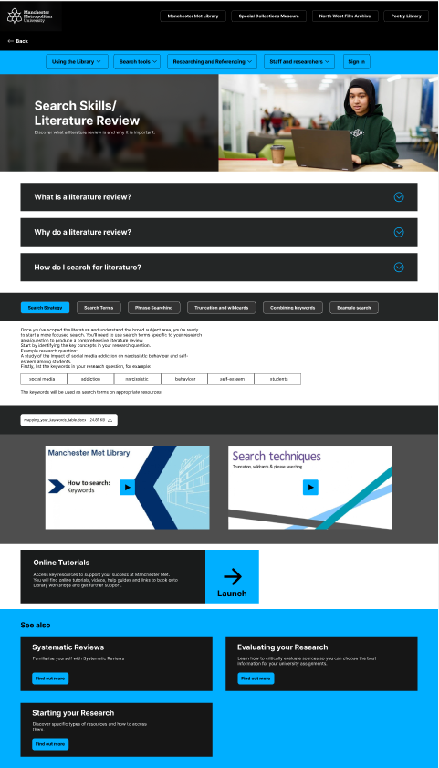
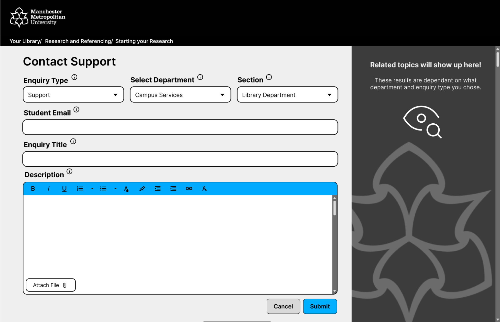
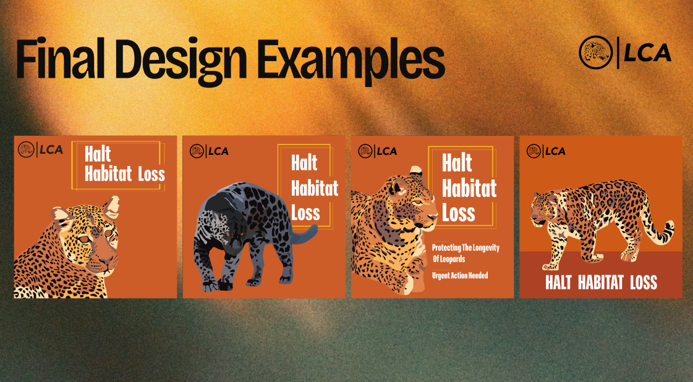

Projects
MMU Library Project (Live client)
My Role: Co-lead in creating the live prototype and responsive components using Figma. Participated in student usability testing interviews, both as an interviewer and as a transcriber. Ensured group communication was at a high standard.
This information architecture project aimed to resolve a myriad of potential issues that were present on the MMU library website. Methods such as heuristic evaluations and user journeys ensured that my groups were based upon UX principles. Additionally, this project gave me invaluable experience with dealing with an actual client, and working off of their wishes. To ensure that our proposed changes were aligned with the needs of MMU students we conducted several face-to-face interviews to identify any shortcomings with our prototype. Collaboration was a key part of this process, as team communication allowed for efficient and effective decisions to be made.
Overall, this project led to the MMU library implementing the findings showcased with our prototype into the live site. Specifically, the language alterations we proposed, in order to ensure navigation of the library site as accessible as possible.
MMU Library Project Ticketing System
My Role: Co-wrote and conducted secondary research for a presentation which was delivered to MMU library staff. I Cross referenced our prototypes to ensure they met accessibility standards while also ensuring they followed the same design principles of the rest of the MMU website.After successfully completing of the MMU library project, my team were tasked with an additional extracurricular task of identifying any features that the MMU library may still be lacking. Using the data gathered from our student usability testing interviews we had already highlighted an aversion of many of the participants to emailing MMU services. To bridge the gap of the perceived formality of emails, we decided to update the outdated ticketing system from another area of the MMU website.
Another issue with having email as the only option for students to contact then library team is that students may not be aware of exactly which department they should be contacting, or how to correctly structure their email. A ticketing system would benefit students in this situation as they possess a clear urgency hierarchy, as well as being less time consuming to complete than an email. Presentation link: https://www.figma.com/deck/WFzKNQDDncfoROlnXqCHGc
LCA WordPress Project
My Role: Gaining a clear understanding of how CMS systems function, and how to use them effectively. Brand creation and HTML and CSS site creation. This WordPress project tasked me with creating a website through the CMS to then recreate this through HTML and CSS coding. This project increased my proficiency and confidence with HTML and CSS coding as a whole and also allowed me to make use of my experience studying graphic design with the creation of the LCA (Leopard Conservation Association) brand. I have found my experience with using Adobe software to be useful in the User Experience field, as both fields share common skillsets and practices. This is best shown through some of the key UX laws, for example the ‘Aesthetic-Usability Effect’ and the ‘Law of Prägnanz’ both lend themselves to creating successful graphic design projects.